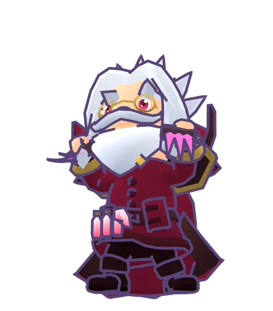

Hemomancer
 Fire · Blood gauge
Fire · Blood gauge
Every skill pays a little Ward and gains Blood. Blood makes your fire burn hotter until one crimson burst spends it all.
SignatureCrimson CovenantAll your Blood in 2 fire hits that always ignite, 12% more per Blood.
Forbidden ArtCrimson EclipseThe world turns red, five slashes from the shadows, then a giant bite.